Visual Insights
Sometimes, a picture really is worth a thousand words. Here are some of the most revealing visualizations from my analysis, each accompanied by a brief explanation of what it shows and why it matters.
School Distribution

This bar chart provides a clear picture of how students are distributed across two schools: "GP" (Gabriel Pereira) and "MS" (Mousinho da Silveira). The data reveals that Gabriel Pereira is by far the more popular choice, with approximately 350 students enrolled, while Mousinho da Silveira has a much smaller student body of about 50. This disparity may reflect differences in school reputation, location, or available programs, and sets the stage for further analysis of how school environment influences student outcomes.
Gender Distribution

Here, we see the gender breakdown of the student population. Female students slightly outnumber their male counterparts, with around 200 females and 180 males. This near balance suggests that both genders are well represented in the dataset, allowing for meaningful comparisons in subsequent analyses.
Address Distribution

This visualization highlights where students live, distinguishing between urban ("U") and rural ("R") addresses. The majority, about 300 students, reside in urban areas, while roughly 100 come from rural backgrounds. This urban-rural split could have implications for access to resources, extracurricular opportunities, and overall educational experience.
Family Size Distribution
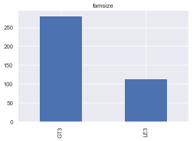This bar chart illustrates the family size of the students, with two categories: "GT3" (greater than 3 members) and "LE3" (less than or equal to 3 members). Most students come from families with more than 3 members, with about 250 students, while around 100 students come from smaller families.
Parental Status

This bar chart shows the distribution of students based on their parents' cohabitation status, with two categories: "T" (living together) and "A" (apart). The vast majority of students' parents are living together (about 350), while a small number (about 50) are living apart.
Mother's Job

This bar chart depicts the distribution of students based on their mother's job, with five categories: "other," "services," "at_home," "teacher," and "health." The most common job category is "other" (about 150), followed by "services" (about 100). Fewer mothers are in "at_home," "teacher," and "health" professions.
Father's Job

This bar chart shows the distribution of students based on their father's job, with five categories: "other," "services," "teacher," "at_home," and "health." Similar to the mother's job distribution, "other" is the most common job category (about 210), followed by "services" (about 100). Few fathers are in the "teacher," "at_home," and "health" categories.
Reason for Choosing School

This bar chart illustrates the reasons students chose their school, with four categories: "course," "home," "reputation," and "other." The most common reason is "course" (about 140), followed by "home" and "reputation" (around 100 each). The "other" category is the least common (about 40).
Guardian

This bar chart shows the distribution of students based on their guardian, with three categories: "mother," "father," and "other." Most students have their mother as their guardian (about 250), followed by their father (about 75), and a small number have another guardian (about 25).
School Support

This bar chart depicts the distribution of students based on whether they receive school support, with two categories: "no" and "yes." The majority of students do not receive school support (about 300), while a smaller number (about 50) do receive support.
Family Support
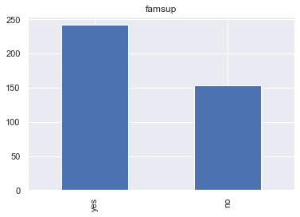This bar chart shows the distribution of students based on whether they receive family support for their studies, with two categories: "yes" and "no." A larger number of students (about 250) receive family support compared to those who do not (around 150).
Extra Paid Classes

This bar chart depicts the distribution of students based on whether they attend extra paid classes, with two categories: "no" and "yes." More students do not attend paid classes (around 200) compared to those who do (about 180).
Participation in Extracurricular Activities

This bar chart shows the distribution of students based on their participation in extracurricular activities, with two categories: "yes" and "no." The number of students who participate in activities (around 190) is almost equal to those who do not (around 180).
Attended Nursery School

This bar chart illustrates the distribution of students based on whether they attended nursery school, with two categories: "yes" and "no." The majority of students (around 300) attended nursery school, while a smaller number (about 70) did not.
Aspiration for Higher Education

This bar chart depicts the distribution of students based on their aspiration for higher education, with two categories: "yes" and "no." Almost all students (around 350) aspire to pursue higher education, with only a few (about 20) not aspiring to do so.
Internet Access

This bar chart shows the distribution of students based on their access to the internet, with two categories: "yes" and "no." The majority of students (around 300) have internet access, while a smaller number (about 70) do not.
Romantic Relationship
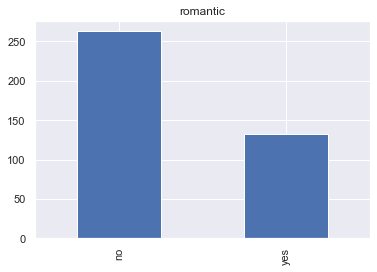This bar chart illustrates the distribution of students based on whether they are in a romantic relationship, with two categories: "no" and "yes." More students are not in a romantic relationship (around 250) compared to those who are (around 120).
Age Distribution
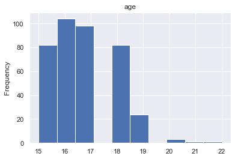This bar chart depicts the age distribution of the students. The most common ages are 16 and 17, with around 100 students each, followed by age 15 with around 80 students. There are fewer students aged 18 (around 40) and very few students aged 19 or older.
Mother's Education Level
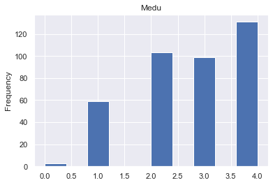This bar chart shows the distribution of students based on their mother's education level (Medu), with categories ranging from 0 (none) to 4 (higher education). The highest frequency is for level 4 (around 130), followed by levels 2 and 3 (around 90 each), and fewer students with mothers at levels 1 and 0.
Father's Education Level
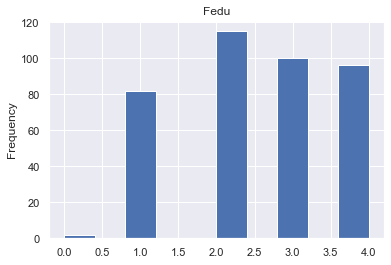This bar chart illustrates the distribution of students based on their father's education level (Fedu), with categories ranging from 0 (none) to 4 (higher education). The highest frequency is for level 2 (around 120), followed by levels 3 and 4 (around 90 each), and fewer students with fathers at levels 1 and 0.
Travel Time to School
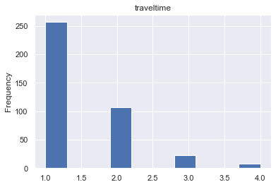This bar chart shows the distribution of students based on the time it takes them to travel to school. The categories are:
- Less than 15 minutes
- 15 to 30 minutes
- 30 minutes to 1 hour
- More than 1 hour
Most students have a travel time of less than 15 minutes (about 250), followed by 15 to 30 minutes (around 100). Very few students travel for 30 minutes to 1 hour or more than 1 hour.
Weekly Study Time

This bar chart illustrates the distribution of students based on the amount of time they spend studying each week. The categories are:
- Less than 2 hours
- 2 to 5 hours
- 5 to 10 hours
- More than 10 hours
The majority of students study for 2 to 5 hours per week (around 200), followed by less than 2 hours (around 75). Fewer students study for 5 to 10 hours or more than 10 hours.
Number of Past Class Failures

This bar chart depicts the distribution of students based on the number of past class failures. The categories range from 0 to 3. Most students have no past failures (about 300), with fewer students having 1, 2, or 3 past failures.
Quality of Family Relationships
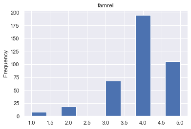This bar chart shows the distribution of students based on the quality of their family relationships, rated from 1 (very bad) to 5 (excellent). Most students rate their family relationships as 4 (about 180) or 5 (around 100), with fewer students rating them as 3, 2, or 1.
Free Time After School
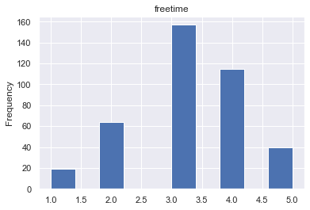This bar chart illustrates the distribution of students based on the amount of free time they have after school, rated from 1 (very little) to 5 (very much). Most students rate their free time as 3 (around 150) or 4 (around 100), with fewer students rating it as 5, 2, or 1.
Going Out with Friends

This bar chart shows the distribution of students based on how often they go out with friends, rated from 1 (very rarely) to 5 (very frequently). The most common rating is 3 (around 120), followed by 2 and 4. Fewer students rate it as 1 or 5.
Workday Alcohol Consumption
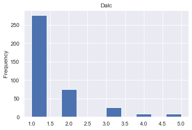This bar chart depicts the distribution of students based on their alcohol consumption on workdays, rated from 1 (very low) to 5 (very high). Most students have a very low workday alcohol consumption (around 250), with fewer students rating it as 2, 3, 4, or 5.
Weekend Alcohol Consumption
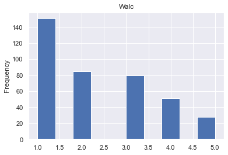This bar chart illustrates the distribution of students based on their alcohol consumption on weekends, rated from 1 (very low) to 5 (very high). Most students have a low weekend alcohol consumption (around 150), with fewer students rating it as 2, 3, 4, or 5.
Current Health Status

This bar chart shows the distribution of students based on their current health status, rated from 1 (very bad) to 5 (very good). Most students rate their health as 5 (around 150), followed by 3 and 4. Fewer students rate it as 2 or 1.
Number of School Absences
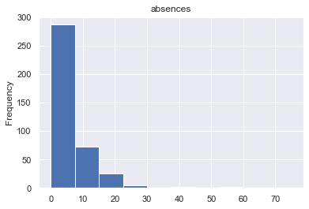This bar chart depicts the distribution of students based on the number of school absences. Most students have fewer than 10 absences (around 300), with fewer students having higher numbers of absences.
First Period Grade (G1)

This bar chart shows the distribution of students' grades for the first period (G1). The grades range from 0 to 20. The most frequent grades are between 8 and 13, with the highest frequency around 10 and 12, indicating that most students received grades in this range.
Second Period Grade (G2)

This bar chart depicts the distribution of students' grades for the second period (G2). The grades also range from 0 to 20. The most frequent grades are between 7.5 and 12.5, with the highest frequency around 10, indicating a similar trend to the first period grades.
Final Grade (G3)
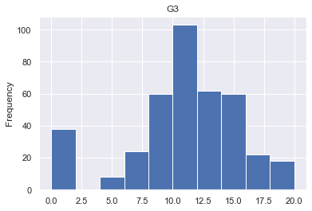This bar chart shows the distribution of students' final grades (G3). The grades range from 0 to 20. The most frequent grades are around 10, with a notable peak, indicating that most students received grades in this range for their final assessment.
Gender and Higher Education Aspiration

Aspiration for higher education is almost equal among genders.
Age Distribution and Higher Education Aspiration

Consistent age distribution among those aspiring for higher education.
Weekend Alcohol Consumption and Health

Low to moderate alcohol consumption correlates with good health.
Absences and Academic Performance

Higher absences correlate with lower academic performance.